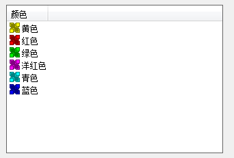

CListCtrl
icon 图标样式
small 小图标样式
list 列表样式
report 报表样式

report 报表样式

使用步骤
1 设置控件 view 属性为 report
2 调用InsertColumn插入列
int InsertColumn(int nCol, //插入第几列
LPCTSTR lpszColumnHeading, //列名
int nFormat = LVCFMT_LEFT, //文字对齐风格 LVCFMT_LEFT LVCFMT_RIGHT LVCFMT_CENTER
int nWidth = -1, //列宽
int nSubItem = -1 //与列相关联的子项的索引。如果该参数为-1，那么没有子项与列相关。
)
成员函数
| function | note |
| InsertColumn(...) | 插入列 |
| BOOL SetColumnWidth（int index,int with） | 设置列宽 |
| int GetColumnWidth(int index) | 获取列宽 |
| BOOL GetColumn(int nCol,LVCOLUMN* pColumn) | 获取指定列的列结构到pColumn |
| BOOL SetColumn(int nCol,const LVCOLUMN* pColumn) | 获取指定列的列结构为pColumn |
| ... | ... |
| int InsertItem(int nItem,LPCTSTR lpszItem) int InsertItem(int nItem, LPCTSTR lpszItem,int nImage) ... | 插入一行 |
| BOOL SetItemText(int nItem,int nSubItem,LPTSTR lpszText) | 设置某行某列的文本 |
| UNIT GetSelectedCount() const | 返回选中行数 |
| int GetSelectionMark() | 返回最后选中行的索引 |
| GetExtendedStyle() | 獲取擴展風格 |
| DWORD SetExtendedStyle(DWORD dwNewStyle) | 設置擴展風格 LVS_EX_FULLROWSELECT(整行選中) | LVS_EX_GRIDLINES(網格) |
| BOOL SetItemState(int nItem, UINT nState, UINT nMask) | 設置某行狀態 SetItemState(n, LVIS_SELECTED, LVIS_SELECTED);選中行 |
| UNIT GetItemState(int nItem,UNIT nMask) const | 返回行狀態 是否選中GetItemState(n, LVIS_SELECTED) == LVIS_SELECTED |
| function | note |
全選 反選
//全選
for(int index=0;index<m_listctrl.GetItemCount();++index)
{
m_listctrl.SetItemState(index,LVIS_SELECTED,LVIS_SELECTED);
}
m_listctrl.SetFocus();
//反選
for(int index=0;index<m_listctrl.GetItemCount();++index)
{
if(m_listctrl.GetItemState(index,LVIS_SELECTED)==LVIS_SELECTED)
{
m_listctrl.SetItemState(index,0,LVIS_SELECTED);
}
else
{
m_listctrl.SetItemState(index,LVIS_SELECTED,LVIS_SELECTED);
}
}
m_listctrl.SetFocus();
遍歷選中的多行
POSITION pos = m_listctrl.GetFirstSelectedItemPosition();
int index;
while(pos)
{
index=m_listctrl.GetNextSelectedItem(pos);
//m_listctrl ... index
}
編輯(只能編輯第一列)
單擊選中項 使控件進入編輯狀態 或者調用 CEdit* EditLabel(int nItem)將屬性中的 Edit Labels 設置為 True(添加 LVS_EDITLABELS風格)
為控件添加 LVN_EDNLABELEDIT 事件處理 (當編輯結束 此處理程序被調用)
void CDPlayerDlg::OnLvnEndlabeleditList3(NMHDR *pNMHDR, LRESULT *pResult)
{
NMLVDISPINFO *pDispInfo = reinterpret_cast(pNMHDR);
// TODO: 在此添加控件通知处理程序代码
CString wcs;
//返回文本
/*CEdit* edit=*/m_listctrl_main.GetEditControl()->GetWindowText(wcs);
//更新數據
m_listctrl_main.SetItemText(pDispInfo->item.iItem, pDispInfo->item.iSubItem, wcs);
*pResult = 0;
}
滾動條
//滾動到 指定項目
BOOL EnsureVisible(
int nItem, //索引
BOOL bPartialOK //是否可接受只有部分顯示
)
//直接控制滾動條 size.cx 水平 size.cy 垂直(+下 -上) 以像素為單位
BOOL Scroll(CSize size)